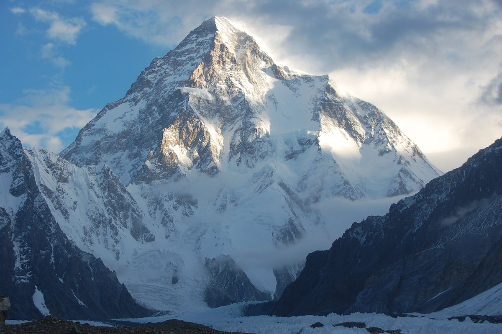
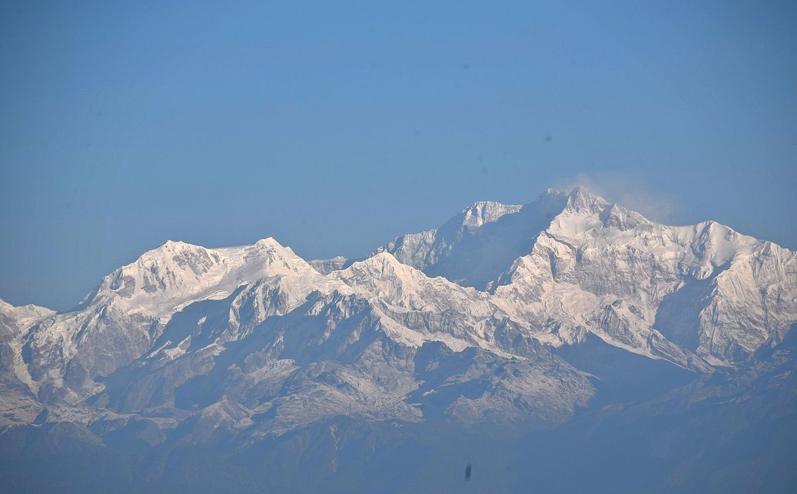
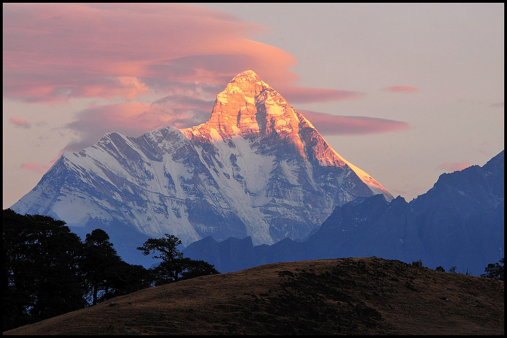
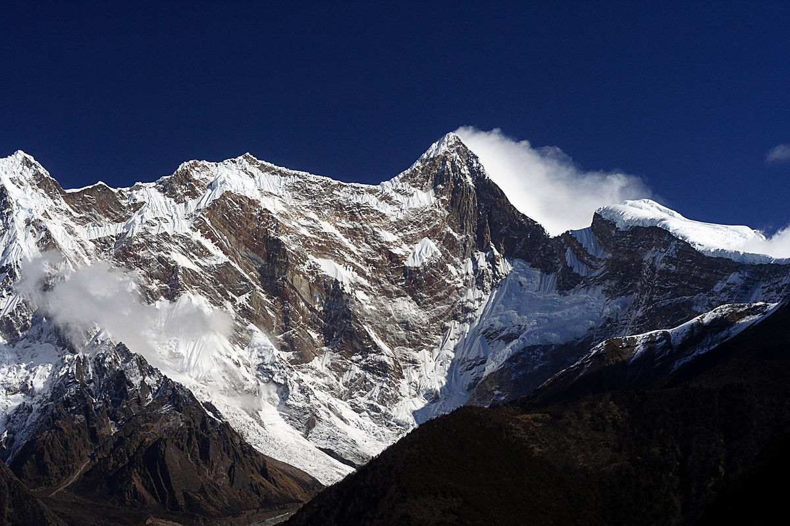
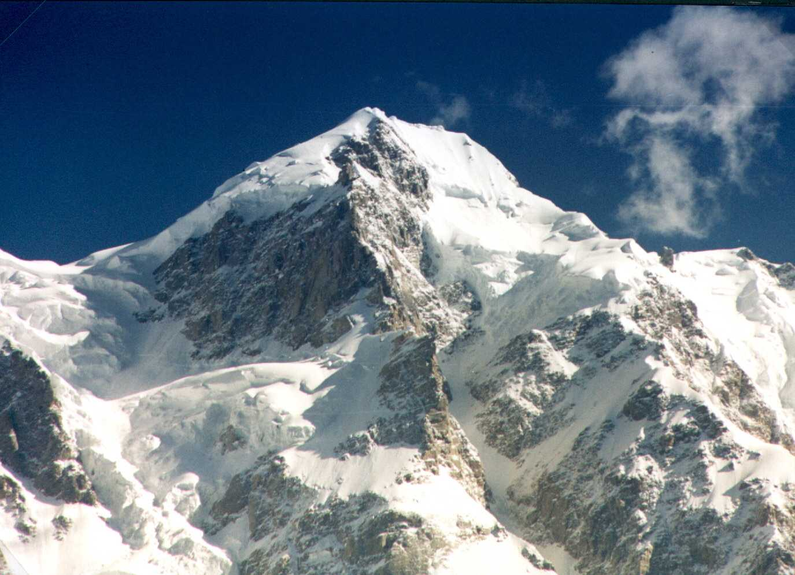
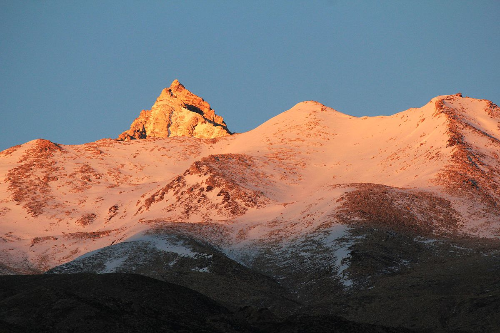
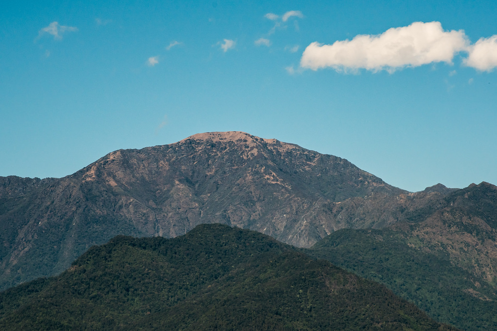
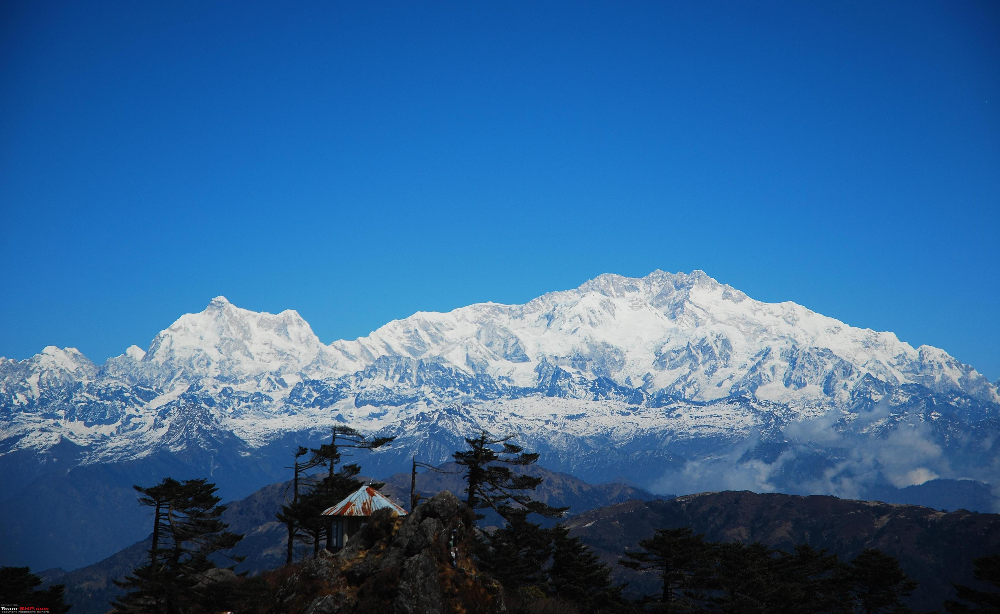
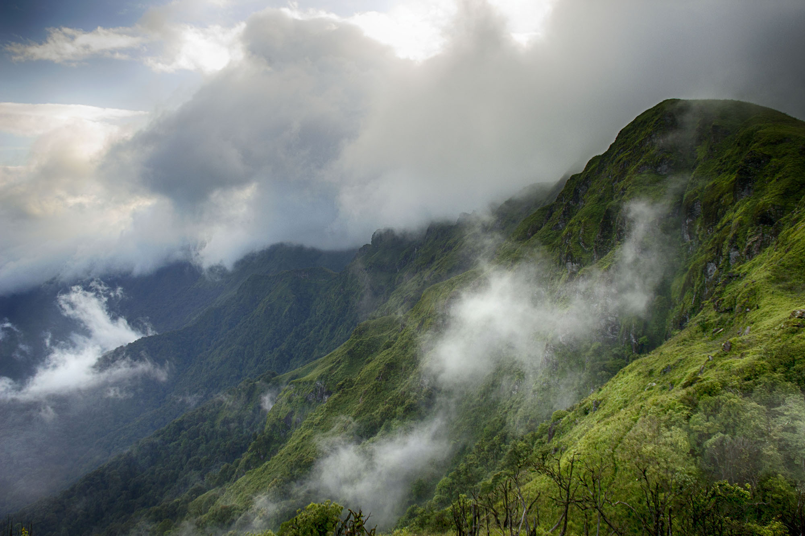
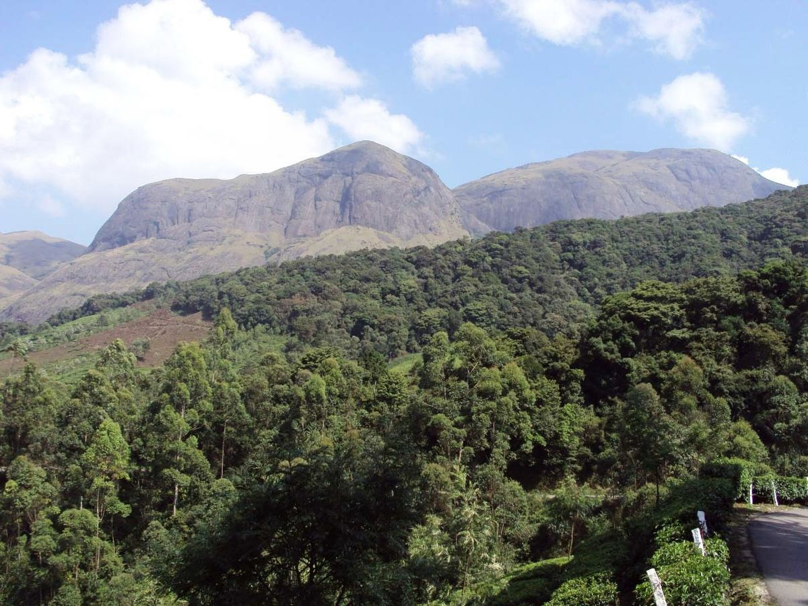

Ain't No Mountain High Enough
10 peaks in India that every budding/ amateur trekker should aspire to climb
Quite often when one is brought up in North India, driving your vehicle towards hilly terrains is not uncommon. This habitual practise for an escape from the city gradually develops into a long lasting relationship with the mighty hills through a process known as trekking. It’s referred to as an addiction in the professional mountaineering community. Spending thousands of dollars just to climb? Here, I present to you some of those mighty peaks that every amateur trekker in India should dream about climbing.
K2 - 8611 m
In Himalayan mountaineering, there are three major categories of “firsts”: the first ascent, the first ascent without supplemental oxygen, and the first ascent in winter, when conditions are at their worst. All of the world’s 14 mountains with peaks that stretch more than 8,000 meters above sea level have been climbed with and without supplemental oxygen. All have been summited in winter, too—except for one that is, K2.
Kangchenjunga - 8586 m
Access to climbing the peak is given by the Chogyal, the monarch of Sikkim. The first climb stopped 10m short of the peak in accordance with the promise given to the Chogyal that the top of the mountain would remain inviolate. Every climber or climbing group that has reached the summit has followed this tradition. The rationale is that they want to avoid desecration of the mountain by godless foreigners.
Nanda Devi - 7816 m
The controversial peak is known as 20th century’s greatest mountaineering-cum-espionage operation done jointly by the CIA and the IB(Intelligence Bureau) to install a plutonium surveillance device to keep track of China’s growing nuclear power in the province of Xinjiang. The question about the 7 lost plutonium rods still haunt the ones who lost it with questions like - several of the sherpas who carried plutonium up the mountain died of cancer caused by radiation and the plutonium capsules will remain hot and melt the snow. It is a mystery whether it formed a cavity or travelled to the bottom of the glacier or got stuck somewhere in between.
Namcha Barwa - 7782 m
After 7,795 metres high Batura Sar in the Karakoram was climbed in 1976, Namcha Barwa became the highest unclimbed independent mountain in the world, until it was finally climbed in 1992. In addition to being one of the highest mountains in the world, Namcha Barwa is also the third most prominent peak in the Himalayas after Mount Everest and Nanga Parbat.
Saltoro Kangri - 7742 m
It is located on the Actual Ground Position Line between Indian controlled territory in the Siachen region and Pakistani-controlled territory west of the Saltoro Range. Due to danger from military operations due to the ongoing Siachen Conflic, Saltoro Kangri is little visited. Areas just to the west are controlled by Pakistan, to the east by India.
Reo Purgyil - 6816 m
At 6,816 m Reo Purgyil is the highest mountain peak in the state of Himachal Pradesh. Geologically the peak is a dome structure and is part of a great massif that rises above the Satluj River (Sutlej) and overlooks the western valley of Tibet. The Spiti River, a right hand tributary of the Satluj, drains the northern face of the massif.
Mount Saramati - 3841 m
Mount Saramati is a peak rising above the surrounding peaks at the mountainous border of Nagaland state, India and the Sagaing Region, Burma, rewarding one with views over Burma/Myanmar and India from its summit.
Sandakphu - 3636 m
The name Sandakphu means ‘Height of the Poison Plant’, a direct reference to the profusion of the poisonous aconite plants that grow near the peak. Four of the five highest peaks in the world, Everest, Kangchenjunga, Lhotse and Makalu can be seen from its summit. It also affords a pristine view of the entire Kanchenjunga Range.
Mount Iso - 2994 m
Mount Iso (2,994 mts.) the highest peak in Manipur lies in the north-western part of Mao. Dzuko valley, situated at the foot of this mountain, is famous for its wide range of flowers in every season. But the most famous one is the Dzükou lily.
Anamudi - 2695 m
Anamudi means “Elephant’s forehead”, a reference to the resemblance of the mountain to an elephant's head. It is also the peak with the greatest topographic isolation within India. It is the highest point in India south of Himalayas. Thus, it is known as "Everest of South India".